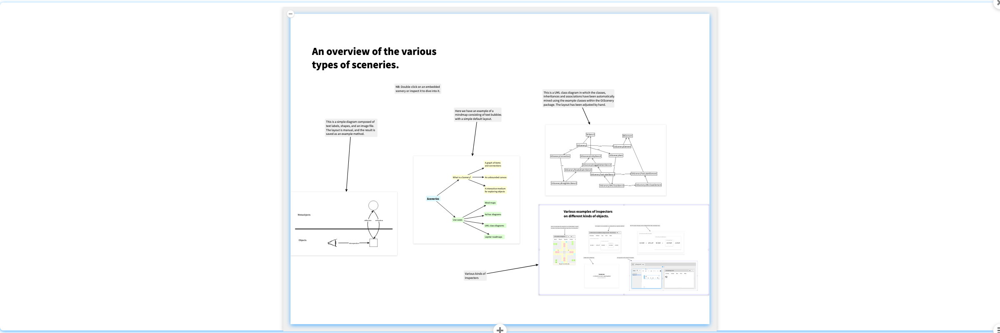
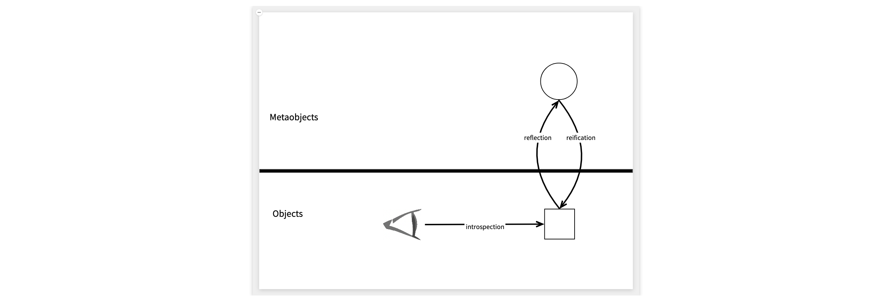
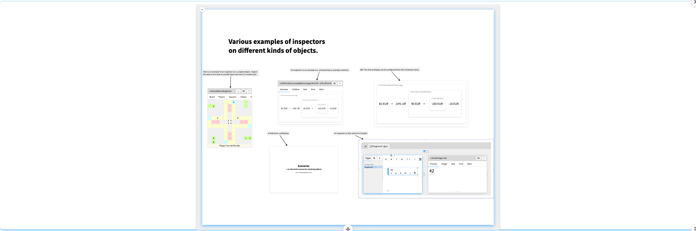
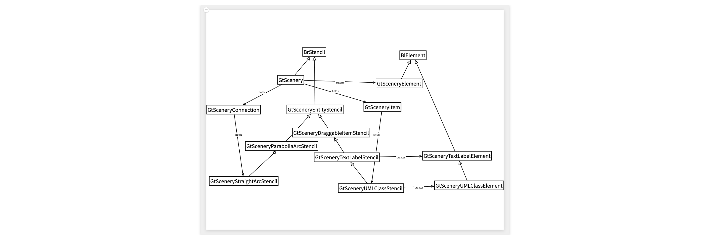
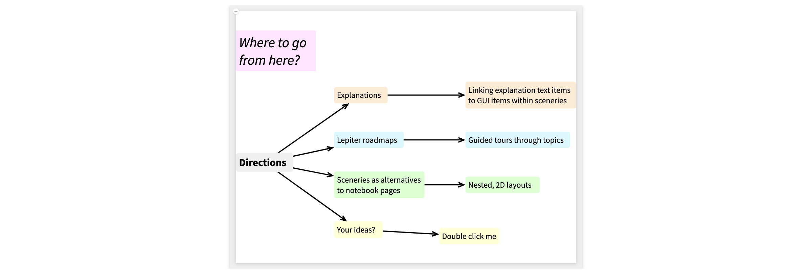

ExploringObjectsScenerySlideshow
Hi. I'm Oscar Nierstrasz.
Today I'd like to show you a prototype that started as a interactive diagram editor, but is turning into a tool for exploring graphs of objects.
A scenery consists of a canvas containing a graph of items and their connections. Items can hold any kind of object, which means that sceneries can be used to explore a graph of objects.
The need for sceneries to be interactive was born from the frustration of having to explicitly program any kind of diagram in GT.
Some use cases are: drawing mind maps, like this one, creating ad hoc diagrams, creating class diagrams, and roadmaps.
Here we see some examples.
We have an ad hoc diagram, a mind map, a generated and manually tweaked UML diagram, and inspectors on various kinds of objects.
Note that this slide itself is a scenery, containing some text items, and other items that are themselves embedded sceneries.

This is probably the simplest case, a simple diagram of text and shapes, illustrating the key concepts of reflection and reification.
We can edit the diagram, freely move items, zoom in or out, and inspect the stencils of items, which are responsible for generating the view.
We can also inspect the scenery itself, and explore views of its items, connections, and the generated code that will recreate the scenery.

This scenery contains various kinds of objects, such as a Ludo game, a demo of modeling discounted prices using examples, a specific view of that example, a slideshow slide, and even the result of a scripted user interaction.
From such an inspector we can produce a new scenery containing a UML diagram generated from the object. For example from the Prices example we can produce a UML diagram of the class of the object and its associated classes.
The scenery is live, so we can navigate to the class definitions. We can also spawn other related classes, or the representation of the package it contains.
The generated source code can eventually be associated with a method, so it can be stored.

Here we see a more complex UML diagram showing the key classes of the Scenery package itself.

Finally, from a package we can explore the examples in that package, and navigate between examples and classes, generating an object and class diagram along the way.
Sceneries are still a work in progress. Some of the things we'd like to see are generated explanations for tools, roadmaps through notebook topics, and sceneries as special kinds of notebook pages.
I'd also be interested if you have ideas for other applications of sceneries or features you'd like to see.
